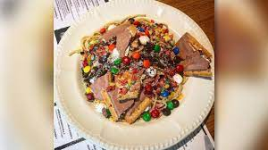

Breakfast Spaghetti

A Christmas favorite! This sweet treat will rot those teeth, but don't let that bother you.
The taste alone is worth the dental costs. Be sure to bring some extra insulin for this decadent
recipe because your pancreas will struggle on its own to manage it for this bad boy.
Ingredients
- 160-200g dried spaghetti
- 80ml (⅓ cup) maple syrup
- 50ml (¼) chocolate syrup
- Handful of M&M's
- Handful of mini marshmallows
- 1 choclate Pop-Tart (crushed)
Steps
- Add dried spaghetti to a pot of boiling salted water.
- Reduce the heat to a simmer and cook for 8-10 minutes to desired firmness.
- Drain water from pasta and allow 2 minutes to cool.
- Put pasta onto a plate or into bowl.
- Add remaining ingredients.
- Mash together with hands.
- Enjoy!